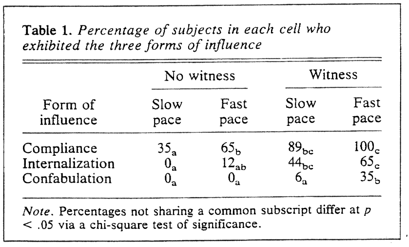
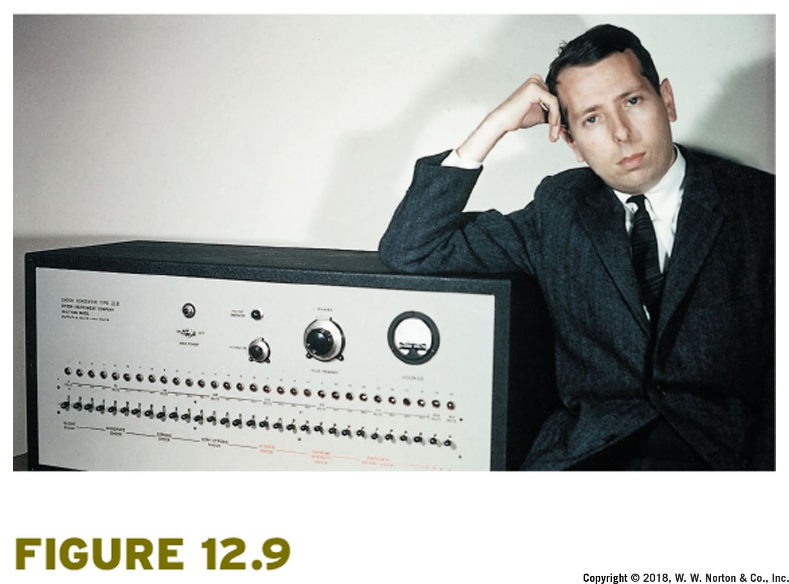
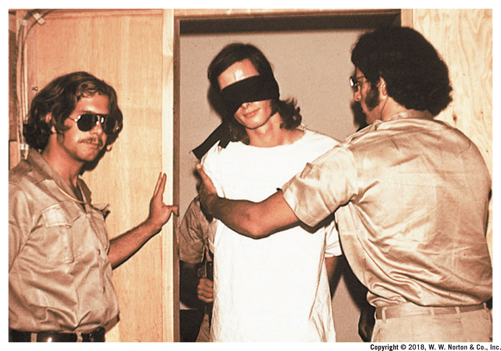
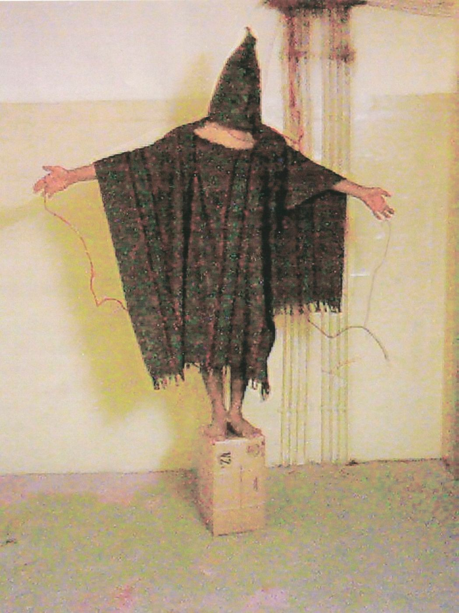
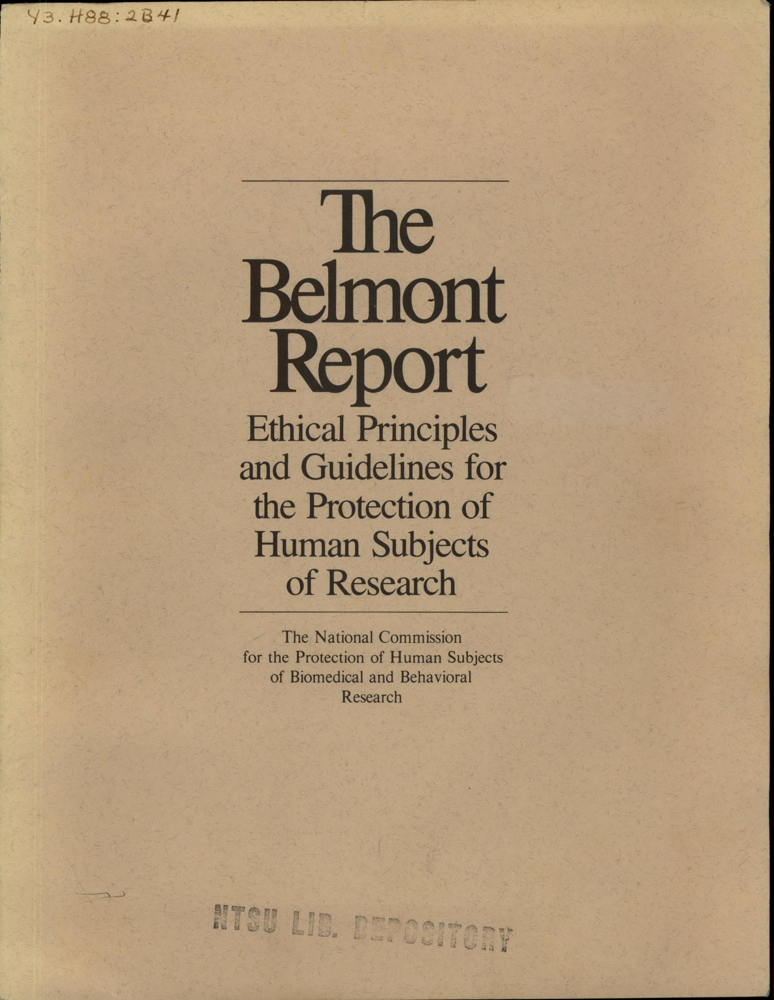
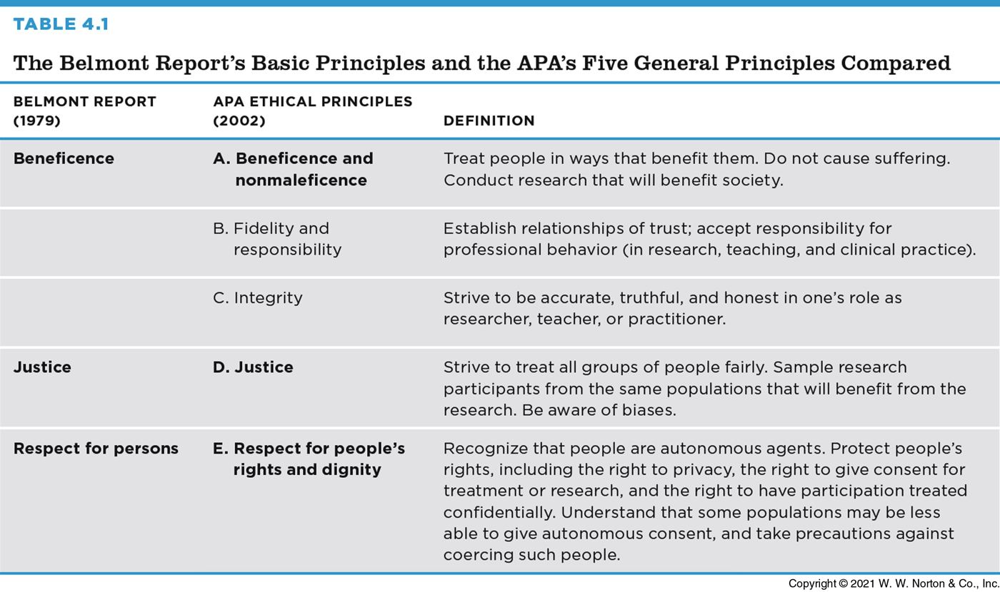
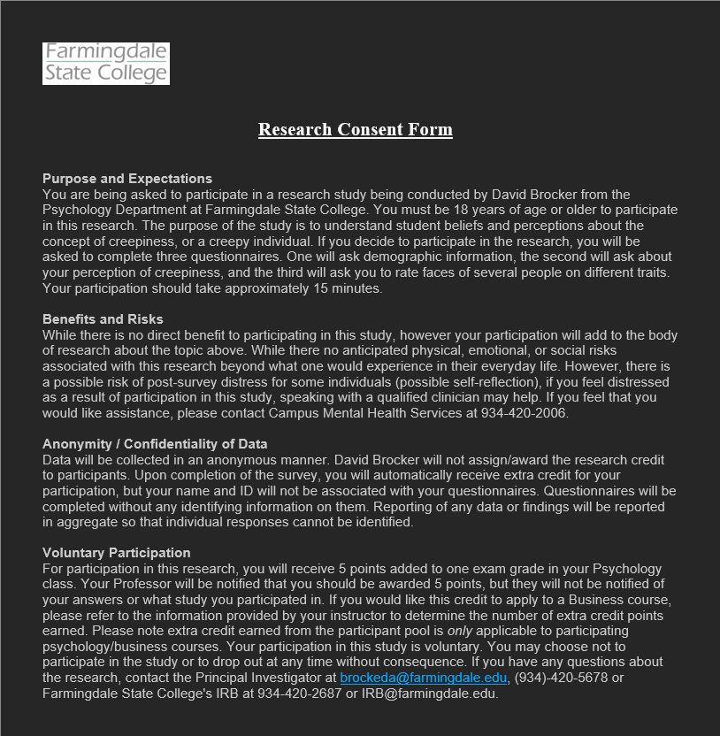
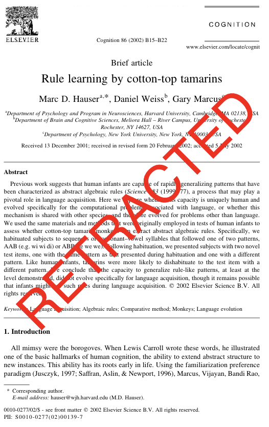
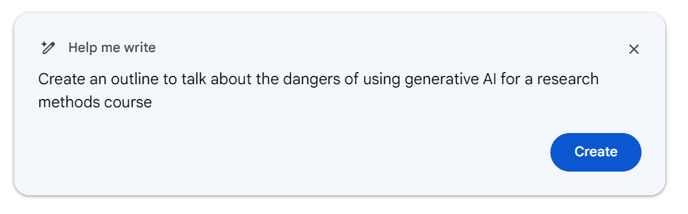

Dave Brocker
The opening question
Should psychologists use deception or attempt to produce certain feelings in their research participants?

A study on false confessions — participants were accused of a crash they didn’t cause (pressing the ALT key) after their computer “crashed.”
Participants
79 undergraduates — 40 male, 39 female
IV 1: Vulnerability
High vs. Low Vulnerability
IV 2: Witness
Witness vs. No Witness
Participants were told not to press the ALT key. 60 seconds later, the computer crashed — and a confederate suggested the participant had caused it by pressing the forbidden key.
The ethical tension
No participant actually caused the crash. The study measured whether people would falsely confess — which meant deceiving every participant about what really happened.
Guided by the American Psychological Association’s ethical principles for research.
The modern rules governing research ethics didn’t come from nowhere — they came from real cases where researchers caused real harm.
The prosecution of Nazi physicians for experiments conducted on concentration camp prisoners without consent led to the Nuremberg Code (1947) — the first major international standard for research ethics.
Researchers withheld treatment from Black men with syphilis for 40 years — even after penicillin became a known, effective cure — without informing participants of their diagnosis or the existence of treatment.

Participants were instructed to administer what they believed were increasingly severe electric shocks to another person, testing how far people would go under the instruction of an authority figure.

Participants randomly assigned to “guard” and “prisoner” roles in a simulated prison — ended early after guards began behaving abusively toward prisoners.

The dynamics observed in the Stanford Prison Experiment have been cited as a lens for understanding real abuses of institutional power decades later.

U.S. Surgeon General (late 1960s)
First federal guidelines requiring informed consent for federally funded research
National Research Act (1974)
Established Institutional Review Boards (IRBs) in law
Belmont Report (1979)
The ethical framework still used today

Three core principles for ethical research with human subjects:
Respect for Persons
Treat people as autonomous agents; extra protections for those with diminished autonomy
Beneficence
Maximize possible benefits, minimize possible harms
Justice
Fairness in who bears the burdens and who receives the benefits of research
Updated and expanded many times, periodically reviewed. Ten standards total — Section 8: Research and Publication is the one most relevant to conducting a study.
Clinical Equipoise
Subjects must be protected from physical or psychological harm.
Informed Consent
Participants must understand what they’re agreeing to before they agree to it.
Deception
When is it justified, and what has to happen afterward?
Confidentiality
Protecting what participants share.

A real consent form typically covers: the purpose of the study, what participation involves, risks and benefits, confidentiality protections, and the right to withdraw at any time without penalty.
Everyday example
“Everything works great on this car!” (Lie — don’t mention what doesn’t work)
Everyday example
“I can totally speak 3 different languages!” (Lie — applies for a bilingual position)
Research deception works the same way: withholding or misrepresenting the true purpose of a study from participants.
Deception is only permissible when there’s no reasonable non-deceptive alternative, no expectation of serious harm, and participants are debriefed afterward.
Protecting participants’ data and identities — from the raw data itself through to how results are reported and published.
Every institution conducting research with human subjects has an IRB that reviews proposed studies before they begin, weighing the risks to participants against the study’s scientific value.
Why do researchers use nonhuman subjects at all? Some questions can’t ethically (or practically) be studied in humans — but that doesn’t remove the ethical obligations toward the animals involved.
Institutional Animal Care and Use Committees (IACUCs) play a role analogous to an IRB — reviewing study design, housing, and treatment of animal subjects.

Ethical research design is rarely a simple checklist — it’s weighing scientific value against risk to participants, case by case.
Ethics doesn’t stop once data collection ends — how a study is reported and published raises its own set of ethical questions.
Fabricating or falsifying data, or misrepresenting results, undermines the entire scientific record other researchers build on.
Peer review, replication, data-sharing requirements, and institutional research integrity offices all exist to catch and deter fraud — though none of them is foolproof.
Repeating text verbatim is plagiarism — even with a citation
Original text, Quirin, Kazen, & Kuhl (2009):
Are affective experiences like happiness, sadness, or helplessness always amenable to self-report? Whereas many individuals may be able to describe their affective states or traits relatively accurately, others may provide self reports that deviate from their automatic affective reactions.
Changing a few words is still plagiarism, even with a citation:
Are people really in touch with their emotional responses? For example, are feelings like happiness, sadness, or helplessness always available for self-report? Whereas many individuals may be able to describe their feelings relatively accurately, others may provide self reports that deviate from their true reactions (Quirin, Kazen, & Kuhl, 2009).
Changing most of the wording but keeping the same structure and order of ideas is a step toward paraphrasing — but is still plagiarism, even with a citation:
Is it easy for people to report their feelings? Although some people may be able to give accurate reports, others fail to provide accurate descriptions of how they feel (Quirin, Kazen, & Kuhl, 2009).
The takeaway
Real paraphrasing means processing the idea and re-expressing it in your own structure and words, not swapping synonyms into someone else’s sentence.
Use Caution!

Large language models raise research-ethics questions of their own: from citing AI-assisted writing honestly to the risk of an LLM inventing a citation that doesn’t exist.